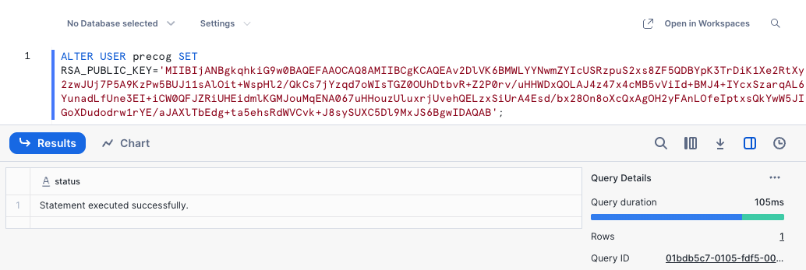

Connect to Snowflake
Snowflake Key Pair Authentication Migration
A Service User in Snowflake’s environment provides Precog with programmatic access to write data to your Data Warehouse and Database. To avoid any disruptions in your data flow, you will need to reconfigure your Precog and Snowflake accounts to use Key Pair authentication. Follow the directions below, and when completed successfully, click on the Complete Migration button.
- Log in to your Snowflake account. You must have Account Admin privileges to alter the Service User.
-
Create a new SQL Worksheet. Click on + Create in the top left navigation and then choose SQL Worksheet.

-
The following SQL statement assigns a public key to your Snowflake Service User. The corresponding encrypted private key has already been generated for your Precog configuration. Copy and paste the following SQL statement into the worksheet:
ALTER USER precog SET RSA_PUBLIC_KEY='MIIBIjANBgkqhkiG9w0BAQEFAAOCAQ8AMIIBCgKCAQEAv2DlVK6BMWLYYNwmZYIcUSRzpuS2xs8ZF5QDBYpK3TrDiK1Xe2RtXy2zwJUj7P5A9KzPw5BUJ11sAlOit+WspHl2/QkCs7jYzqd7oWIsTGZ0OUhDtbvR+Z2P0rv/uHHWDxQOLAJ4z47x4cMB5vViId+BMJ4+IYcxSzarqAL6YunadLfUne3EI+iCW0QFJZRiUHEidmlKGMJouMqENA067uHHouzUluxrjUvehQELzxSiUrA4Esd/bx28On8oXcQxAgOH2yFAnLOfeIptxsQkYwW5JIGoXDudodrw1rYE/aJAXlTbEdg+ta5ehsRdWVCvk+J8sySUXC5Dl9MxJS6BgwIDAQAB';
-
Click on the Run option, the arrow icon in the top right corner.
-
Verify that the "Statement executed successfully" before clicking the Complete Migration button.
Note or Warning: If you refresh or reload this page, you will need to rerun the SQL statement in Snowflake as the paired private key will have been regenerated.
If you already have key-pair authentication set up, or if you want to generate your own key-pair. Click here to be redirected to your Snowflake destination, where you can upload your private key and enter your encryption password.
-
When you are ready, click the Complete Migration button.